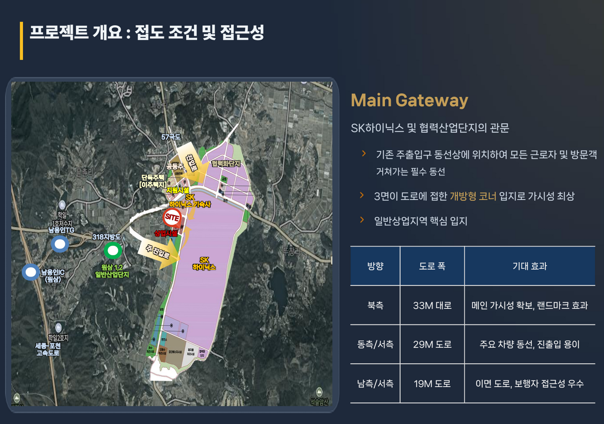
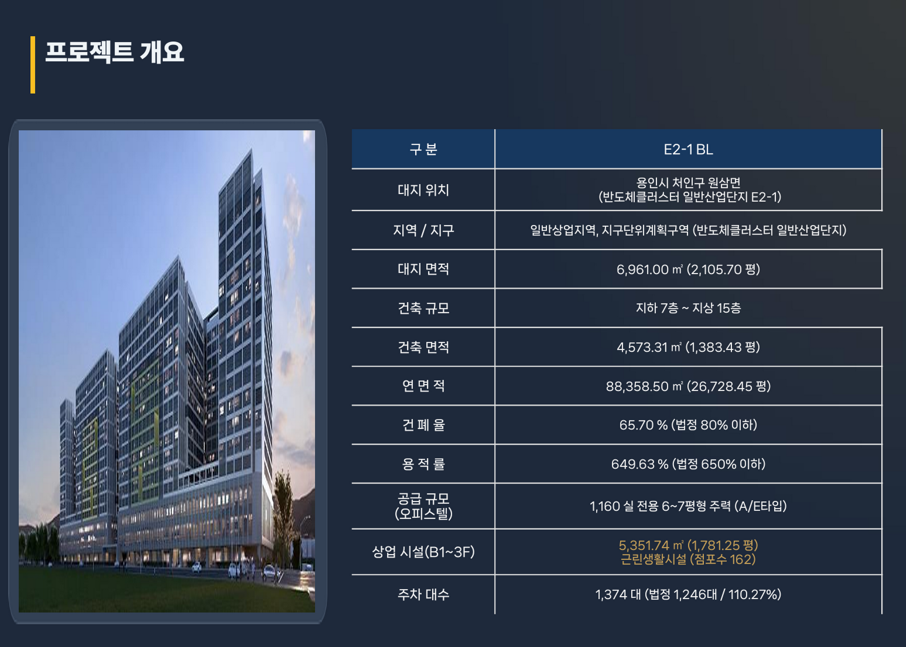

기업제안서 열람
아래 8페이지 제안서를 지금 바로 읽기 전용으로 확인합니다.
기업제안서 열람원삼 센트레빌 퍼스트원 기업숙소·직원숙소·법인 임차 검토자료입니다. 원본 PDF 다운로드는 제공하지 않으며, 세부 자료는 기업자료 요청 접수 후 이메일 또는 유선으로 개별 안내됩니다.
아래 8페이지 제안서를 지금 바로 읽기 전용으로 확인합니다.
기업제안서 열람기업명·담당자명·전화번호·이메일 — 숙소 검토 의향만 먼저 남깁니다.
기업의향서 접수세부 제안서 원본·검토자료가 필요할 때 요청 목적과 함께 남깁니다.
기업자료 요청원삼 센트레빌 퍼스트원 (가칭)
경기도 용인시 처인구 원삼면 일대
주거형 오피스텔 + 근린생활시설, 기업숙소 검토 가능 상품
기업숙소, 직원숙소, 법인 임차, 현장 근무자 숙소
기업자료 요청 접수 후 이메일 또는 유선 개별 안내
홈페이지 내 읽기 전용 열람 + 요청 시 개별 안내
기업숙소, 직원숙소, 법인 임차 검토 시 현장과 주요 출입 동선, 상업시설용지 위치를 함께 검토할 수 있도록 구성한 참고 이미지입니다.




현장 접근성과 통근 동선을 함께 확인해 기업숙소 운영 가능성을 검토합니다.
E2-1·E2-2 상업시설용지와 주변 생활 인프라의 관계를 확인합니다.
직원숙소, 출장 인력 숙소, 장기 임차 수요를 자료 요청과 함께 검토합니다.
본 이미지는 공개 웹자료 및 현장 홍보자료를 기반으로 위치 이해를 돕기 위한 참고 이미지입니다. 세부 위치, 공급 조건, 일정은 상담 시 최신 자료 기준으로 확인됩니다.
아래 제안서는 홈페이지 안에서 읽기 전용으로 제공됩니다. 원본 파일 또는 세부 자료가 필요한 경우 자료요청을 남겨주시면 담당자가 개별 안내드립니다.
도보권·직주근접 배후 주거 검토자료
본 제안서는 귀사의 직원숙소·법인숙소 수요 검토를 돕기 위한 정보 제공 자료입니다.
기재된 분양가·공급조건·일정은 사업주체 확정 전 예정 사항으로 변경될 수 있으며, 투자 권유 목적이 아닌 기업 주거복지 검토용 참고자료입니다.
용인 반도체클러스터 1차 FAB은 2027년 상반기 준공 예정입니다.
가동 시점에 인력은 몰리지만, 원삼면 일대의 신축 주거 공급은 절대적으로 부족합니다.
1차 FAB 준공 시점 상주·공사 인력 약 5.5만 명 규모 예상. 단지 내 계획 기숙사는 약 2,500세대 수준에 그쳐, 협력사 인력 대부분이 외부에서 숙소를 확보해야 하는 구조입니다.
원삼면 고당리 일대 전용 25㎡ 구축 원룸 월세가 보증금 500만 / 월 115만 원 수준에 등록된 사례가 관측됩니다. 신축 공급 전인데도 판교급 임대료가 형성되는 이례적 시장입니다.
가동 후 개별 확보 시 임차 경쟁·비용 상승이 불가피합니다. 법인 단위로 필요 호실을 사전에 검토·확보하면 인력 운영 리스크와 주거비 변동성을 관리할 수 있습니다.
직원숙소 확보는 복지가 아니라, 인력 운영 리스크 관리입니다.
3교대 근무 구조가 만드는 도보권 프리미엄
반도체 FAB은 24시간 가동되며 3교대 근무가 기본입니다. 심야·새벽 교대 시간대에는 대중교통이 사실상 단절되어, 도보 출퇴근이 가능한 숙소의 실효 가치가 가장 높습니다. 기업 입장에서는 통근 차량 운영 부담과 지각·피로 리스크를 동시에 줄이는 입지입니다.
상업용지 희소성 — 공급이 구조적으로 제한된 블록
| 구분 | 원삼 클러스터 | 일반 신도시(참고) |
|---|---|---|
| 전체 대비 상업용지 비율 | 약 0.8% 수준 | 통상 2~4% 내외 |
| 의미 | 주거·상업 총량 자체가 제한 | 공급 경쟁 상시 존재 |
126만 평 규모 산업단지 내 일반상업용지는 약 0.8% 수준에 불과해, 향후 인근에 유사 상품이 대량 공급되기 어려운 구조입니다. 이는 법인 숙소를 선확보한 기업에게 중장기 임차·운영 안정성으로 작용할 수 있습니다.
협력화단지 37개 필지 중 31개 필지 · 29개 기업이 입주협약을 체결한 것으로 보도되고 있습니다. 귀사와 동일한 고민을 하는 기업이 이미 다수 존재합니다.
| 구분 | 내용 |
|---|---|
| 사업명(가칭) | 원삼 센트레빌 퍼스트원 (SK원삼) |
| 위치 | 용인 반도체클러스터 일반산업단지 E2-1 · E2-2 블록 |
| 대지면적 | 6,961㎡ (약 2,105평) |
| 용도 | 주거형 오피스텔 + 근린생활시설 복합 |
| 공급 규모(1차) | 오피스텔 1,160실 · 상가 162호실 (1개동 기준, 총 2개동 계획) |
| 층별 구성 | B1~3F 상업시설 / 4F~15F 오피스텔 / 지하주차장 |
| 시공 예정 | 동부건설 센트레빌 브랜드 적용 예정 |
평형 구성 — 1인 근무자 중심 소형 특화
| 타입 | 호실 수 | 구조 | 전용면적 | 비고 |
|---|---|---|---|---|
| A형 | 656실 | 1룸 | 6.22평 | 주력 평형 |
| E형 | 288실 | 1룸 | 6.11평 | - |
| C형 | 86실 | 1.5룸 | 7.15평 | 중간관리자·2인 |
| F형 | 48실 | 1.5룸 | 7.08평 | - |
| D형 | 48실 | 1룸 | 6.05평 | - |
| B형 | 24실 | 1룸 | 6.36평 | - |
1룸 1,016실(87.6%) + 1.5룸 144실(12.4%) — 단신 부임·교대 근무 인력의 숙소 수요에 최적화된 구성입니다. 전 호실 자주식 주차 설계로 교대 시간대 차량 운영이 원활합니다.
B1~3F 상업시설(식음·편의·의료 등) 입점 시 별도 이동 없이 생활 편의를 해결하는 구조로, 기숙사 대비 자율성과 관리 편의를 동시에 확보할 수 있습니다.
상주 엔지니어·생산직 대상 장기 임차 또는 법인 매입 후 사택 운영
장비 셋업, 유지보수 등 단기·중기 체류 인력의 고정 숙소 (호텔 대비 관리 용이)
채용 후 정착 전 3~6개월 임시 거처 제공 — 채용 경쟁력 강화 수단
자체 기숙사 미보유 기업의 주거복지 프로그램 대체 운영
기업의 고민, 이렇게 연결됩니다
| 기업의 현안 | 숙소 확보 시 기대 효과 |
|---|---|
| 신규 인력 채용 경쟁 심화 | 숙소 제공은 지방 사업장 채용의 핵심 경쟁력 |
| 원거리 출퇴근 피로·이탈 | 도보권 숙소로 피로도·이탈률 완화 가능성 |
| 장비 셋업 인력의 단기 체류 | 고정 숙소 운영으로 숙박비·관리 부담 절감 |
| 3교대 근무 심야 이동 | 도보 3분 거리로 심야 교대 리스크 최소화 |
| 외부 출장자 숙박 관리 | 호텔 대비 고정비 예측 가능, 관리 일원화 |
원본 파일 또는 세부 검토자료가 필요한 기업 담당자는 자료요청을 남겨주세요. 담당자가 확인 후 이메일 또는 유선으로 개별 안내드립니다.
자료요청하기아래 조건은 사업주체 확정 전 예정 사항으로, 입주자모집공고 시 변경될 수 있습니다.
| 항목 | 예정 내용 (변동 가능) |
|---|---|
| 평균 분양가 | 호실당 평균 약 2억 2,500만 원 수준 (원룸·1.5룸 평균) |
| 청약금 | 200만~300만 원 수준 예상 |
| 계약금 | 분양가의 10% |
| 중도금 | 무이자 60% + 추가 10%(유이자) 예정 — 조건 확인 필요 |
| 법인 중도금 대출 | 가능 여부 확인 중 (확정 시 별도 안내) |
| 공급 일정 | 2026년 7월 모델하우스 오픈 및 사전접수 예정 |
법인이 지금 검토하면 유리한 이유
참고 — 현재 관측되는 인근 임대 시세
원삼면 고당리 전용 25㎡ 구축 원룸: 보증금 500만 / 월 115만 원 등록 사례
펜션 개조 16실 직원숙소 통임대: 월 960만 원 수준 매물 사례
→ 신축 공급 부재 상태에서 형성된 시세로, 가동 이후 수급은 더 타이트해질 전망입니다.
귀사의 숙소 수요 규모를 파악해 주시면, 필요 호실 수·타입·시기에 맞춘 맞춤 검토안(배치·조건·세무 검토 포함)을 무료로 제공해 드립니다. 원본 제안서의 회신 양식 항목은 아래와 같으며, 실제 접수는 기업의향서 접수 페이지에서 진행됩니다.
기업명과 담당 부서를 남겨주세요.
회신 받으실 담당자 정보입니다.
예: 10실 미만 / 10~30실 / 30실 이상
예: 장기숙소 / 출장숙소 / 임시숙소 / 복지기숙사
희망하시는 입주 시점을 알려주세요.
예: 1룸 / 1.5룸 / 혼합
지금 결정하실 것은 계약이 아니라, 검토입니다.
2027년 상반기 1차 FAB 가동이 다가올수록 원삼 일대 숙소 확보 검토는 서두르는 편이 유리할 수 있습니다. 본 제안은 계약 권유가 아니라, 귀사의 인력 운영 계획에 맞춘 숙소 수요를 지금 시점에 무료로 검토해 보시라는 제안입니다.
전화·이메일로 수요 검토 요청 (5분)
필요 호실 수·용도 기반 맞춤 검토안 수령 (무료)
담당자 미팅 및 현장·모델하우스 안내 (7월 오픈 예정)
본 자료는 기업 직원숙소 수요 검토를 위한 정보 제공 목적으로 작성되었습니다.
분양가·공급조건·일정 등은 사업주체의 입주자모집공고 확정 전 예정 사항으로 변경될 수 있으며, 수익·가치 상승을 보장하지 않습니다. 계약 전 반드시 공고문과 계약 조건을 확인하시기 바랍니다.
원삼 센트레빌 퍼스트원은 일반 분양 상담과 별도로 기업숙소, 직원숙소, 법인 임차 수요 검토가 가능한 주거형 상품입니다. 용인시 처인구 원삼면 일대에서 검토 가능한 상품으로, 반도체 클러스터 배후 산업수요와 장기 체류 인력의 숙소 수요를 함께 검토할 수 있습니다.
기업 임직원 숙소 담당자, 법인 임차 담당자, 협력사·현장 근무자 숙소 담당자
계약 판단 전 확인해야 할 검토 항목을 정리한 안내형 리딩 자료입니다.
홈페이지 리딩과 기업자료 요청 후 이메일 안내를 함께 운영합니다.
파일 다운로드가 아닌 열람과 요청 중심으로 자료를 운영합니다.
원삼 일대는 반도체 클러스터 개발 흐름과 산업단지 배후 수요가 함께 검토되는 지역입니다. 다만 개발계획, 입주시점, 교통 여건은 반드시 최신 자료 기준 확인이 필요합니다.
경기도 용인시 처인구 원삼면 일대
반도체 클러스터 배후수요, 산업단지 근무자 주거 수요 (확인 필요)
근무지와 숙소 간 이동 부담을 줄일 수 있는 배후 입지 가능성 검토
향후 개발계획은 확정 전 사항으로, 공식 자료 확인이 필요합니다.
기업고객은 직원숙소, 기업숙소, 법인 임차, 현장 근무자 숙소, 장기 체류 인력 숙소 관점에서 활용 가능성을 검토할 수 있습니다.
상주 임직원의 중장기 숙소로 검토할 수 있습니다.
직원복지용 주거 지원 목적으로 검토할 수 있습니다.
법인 명의 임차 계약 방식으로 검토할 수 있습니다.
협력사 현장 근무자, 장기 체류 인력의 숙소로 검토할 수 있습니다.
직원숙소와 법인 임차는 계약 주체와 운영 방식이 다르므로 별도로 확인이 필요합니다.
임직원 배정 기준, 순환 입주 여부, 관리 주체를 함께 검토할 수 있습니다.
회사 부담, 직원 일부 부담 등 비용 분담 방식은 상담을 통해 확인합니다.
법인 명의 계약과 개인 명의 계약의 차이를 확인할 수 있습니다.
인력 이동에 따른 재계약, 중도 해지 조건은 상담 후 개별 확인이 필요합니다.
기업수요 검토는 필요 호실 수와 시점만으로 판단하지 않습니다. 아래 항목을 함께 확인해 주시면 더 정확한 자료를 안내드릴 수 있습니다.
| 항목 | 확인 내용 |
|---|---|
| 필요 호실 수 | 예상 필요 호실 수, 사용 인원, 부서별 배정 가능성 |
| 필요 시점 | 현장 투입 일정, 장기 체류 시작 시점, 입주 가능 시점 |
| 임차 또는 분양 검토 방식 | 법인 임차, 개인 계약, 분양 검토 등 계약 방식 |
| 계약 주체 | 법인 명의 또는 개인 명의 계약 여부 |
| 직원 이동 동선 | 출퇴근 및 셔틀 운영 계획과의 연계 여부 |
| 관리 방식 | 객실 배정, 순환 입주 등 운영 관리 방식 |
| 자료 수신 이메일 | 세부 자료를 받을 담당자 이메일 주소 |
| 자료 | 제공 방식 |
|---|---|
| 기업수요 검토 보고서 | 홈페이지 리딩 |
| 기업유치 보고자료 | 기업자료 요청 후 이메일 안내 |
| 세부 가격자료 | 상담 후 개별 안내 |
| 잔여호실 | 상담 후 개별 안내 |
본 페이지의 정보는 상담 및 자료 안내를 위한 참고 정보입니다.
분양가, 잔여호실, 계약조건, 입주시점 등은 변동될 수 있으므로 상담 시 최신 자료 기준으로 확인해 주시기 바랍니다.
본 페이지는 투자수익이나 가격 상승을 보장하지 않습니다.